Change analysis for Guatemala for PRIMAP-hist v2.7_final compared to
v2.6.1_final
Overview over
emissions by sector and gas
The following figures show the aggregate national total emissions
excluding LULUCF AR6GWP100 for the country reported priority scenario.
The dotted linesshow the v2.6.1_final data.
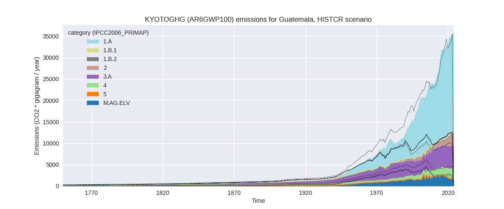
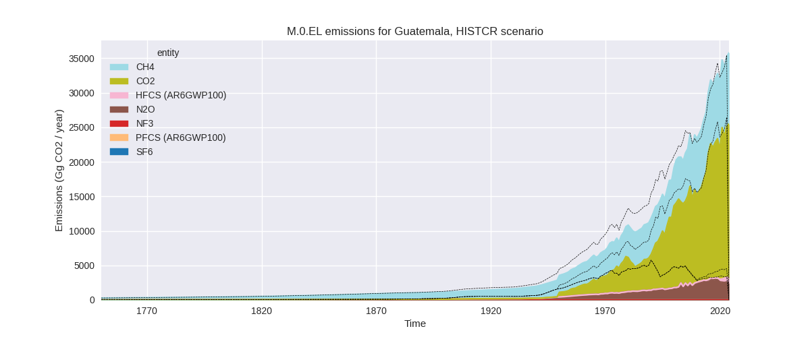
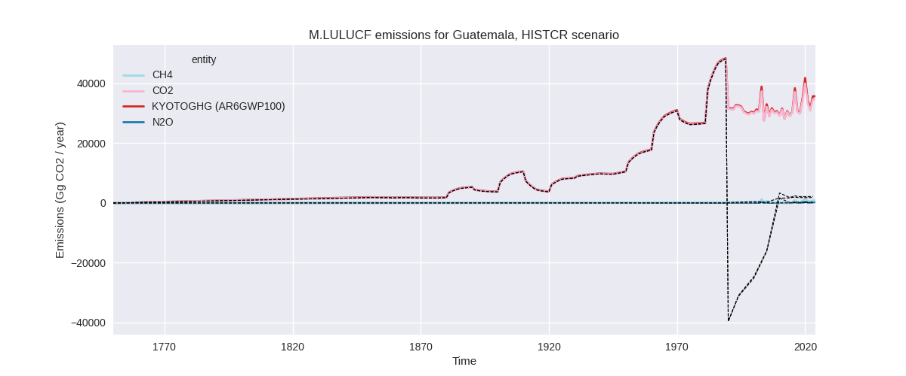
The following figures show the aggregate national total emissions
excluding LULUCF AR6GWP100 for the third party priority scenario. The
dotted linesshow the v2.6.1_final data.
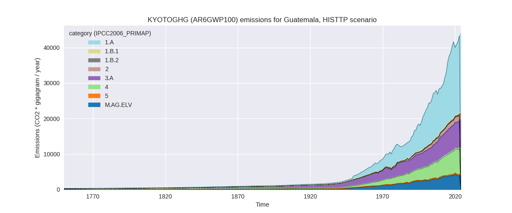
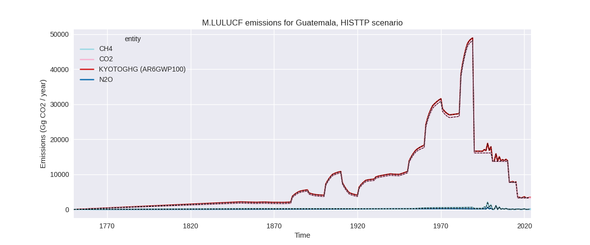
Overview over changes
In the country reported priority scenario we have the following
changes for aggregate Kyoto GHG and national total emissions excluding
LULUCF (M.0.EL):
- Emissions in 2023 have changed by -0.7%% (-232.55 Gg CO2 / year)
- Emissions in 1990-2023 have changed by -5.3%% (-1278.14 Gg CO2 / year)
In the third party priority scenario we have the following changes
for aggregate Kyoto GHG and national total emissions excluding LULUCF
(M.0.EL):
- Emissions in 2023 have changed by 0.2%% (93.92 Gg CO2 / year)
- Emissions in 1990-2023 have changed by 0.3%% (97.22 Gg CO2 / year)
Most
important changes per scenario and time frame
In the country reported priority scenario the
following sector-gas combinations have the highest absolute impact on
national total KyotoGHG (AR6GWP100) emissions in 2023
(top 5):
- 1: 1.A, CO2 with -1125.60 Gg CO2 / year (-5.5%)
- 2: M.AG.ELV, N2O with -1056.70 Gg CO2 / year (-48.6%)
- 3: 1.A, CH4 with 927.15 Gg CO2 / year (49.2%)
- 4: 2, CO2 with 882.23 Gg CO2 / year (66.4%)
- 5: 2, HFCS (AR6GWP100) with -480.97 Gg CO2 / year (-41.7%)
In the country reported priority scenario the
following sector-gas combinations have the highest absolute impact on
national total KyotoGHG (AR6GWP100) emissions in
1990-2023 (top 5):
- 1: M.AG.ELV, N2O with -1475.59 Gg CO2 / year (-53.4%)
- 2: 1.A, CH4 with 437.41 Gg CO2 / year (32.8%)
- 3: 3.A, N2O with -272.52 Gg CO2 / year (-67.7%)
- 4: M.AG.ELV, CH4 with 164.65 Gg CO2 / year (82.1%)
- 5: 2, HFCS (AR6GWP100) with -158.49 Gg CO2 / year (-58.8%)
In the third party priority scenario the following
sector-gas combinations have the highest absolute impact on national
total KyotoGHG (AR6GWP100) emissions in 2023 (top
5):
- 1: 4, CO2 with 202.82 Gg CO2 / year (46446.3%)
- 2: 1.A, CO2 with -108.90 Gg CO2 / year (-0.6%)
- 3: M.AG.ELV, CO2 with 0.00 Gg CO2 / year (0.0%)
- 4: 5, N2O with 0.00 Gg CO2 / year (0.0%)
- 5: 4, N2O with 0.00 Gg CO2 / year (0.0%)
In the third party priority scenario the following
sector-gas combinations have the highest absolute impact on national
total KyotoGHG (AR6GWP100) emissions in 1990-2023 (top
5):
- 1: 4, CO2 with 105.10 Gg CO2 / year (87154.5%)
- 2: 1.A, CO2 with -7.90 Gg CO2 / year (-0.1%)
- 3: 2, CH4 with 0.02 Gg CO2 / year (3.6%)
- 4: 2, HFCS (AR6GWP100) with 0.00 Gg CO2 / year (0.0%)
- 5: 5, N2O with 0.00 Gg CO2 / year (0.0%)
Notes on data changes
Here we list notes explaining important emissions changes for the
country.
- CRT data from BTR1 has been added. It covers 1990-2022 and replaced
data from NC3 and the UNFCCC DI portal. Total changes are very small for
2023 and moderate for cumulative emissions because for 2023 individual
sector changes mostly cancel out.
- Energy CO2 differs for many years but the changes are moderate and
mostly cancel for cumulative emissions. CH4 from the energy sector is
much higher post 2000 and now in line with EDGAR data. N2O is higher as
well and also more in line with EDGAR data (until 2014).
- CO2 in IPPU is much higher starting in 2020 because the CRT data
shows a strong increase in mineral industry emissions post 2019 which is
not present in the third party data used for extrapolation in
PRIMAP-hist v2.6.1.
- N2O from M.AG.ELV is much lower for all years in the CRT data
compared to older country reported data. CH4 is higher for almost all
years.
- N2O from livestock is similar for recent years but the very high
data points for 1990 and 2000 have been replaced by data more in line
with recent emissions.
- HFC emissions are lower in the new CR data for all years.
- CO2 emissions from waste are now much higher, but the influence on
total emissions changes is small in the CR time-series.
- In the TP time-series the main change is for waste CO2 where no
third party data exists and the change in CR emissions influences the TP
time-series.
- Energy CO2 emissions are slightly lower due to the updated EI
data.
Changes by sector and gas
For each scenario and time frame the changes are displayed for all
individual sectors and all individual gases. In the sector plot we use
aggregate Kyoto GHGs in AR6GWP100. In the gas plot we usenational total
emissions without LULUCF.
country reported scenario
2023
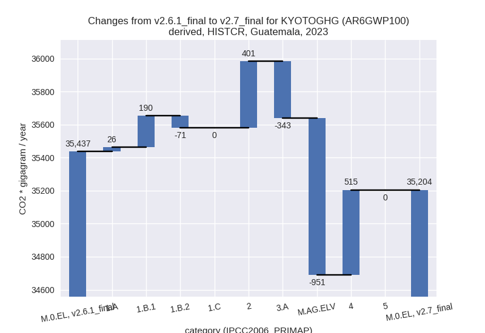
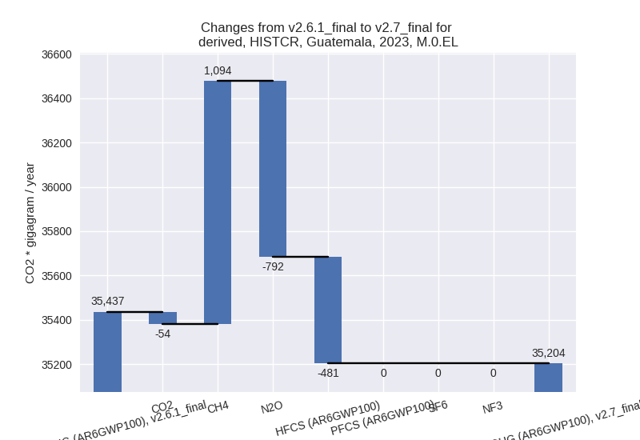
1990-2023
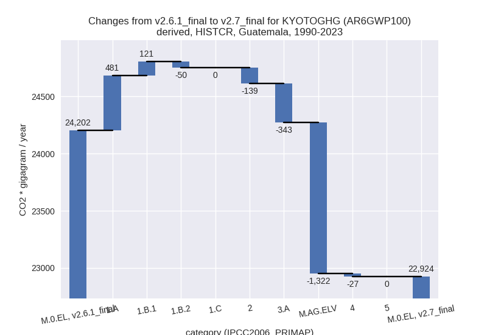
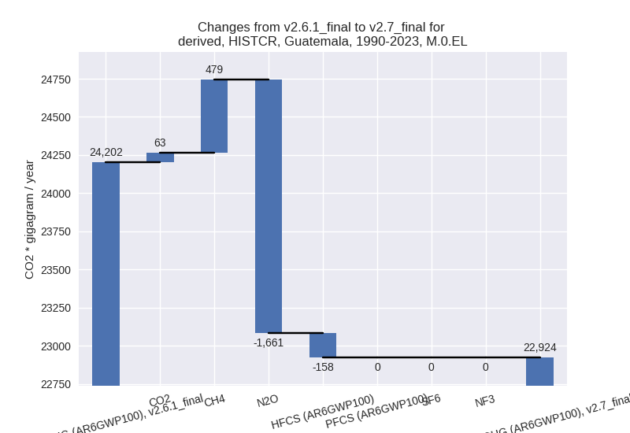
third party scenario
2023
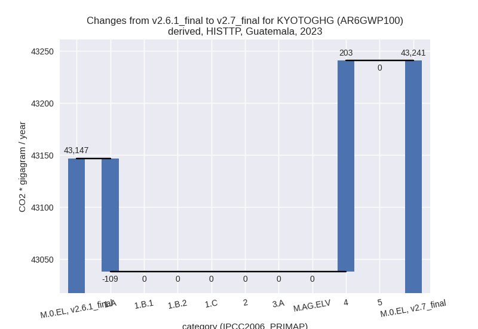
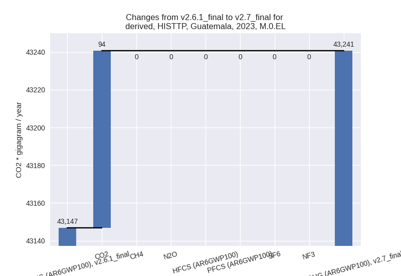
1990-2023
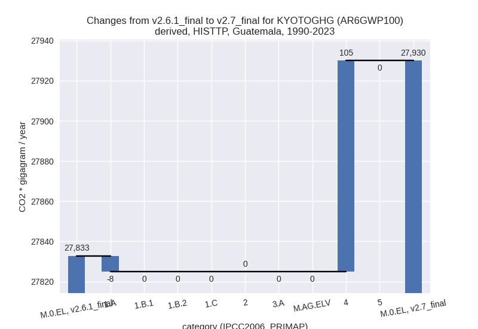
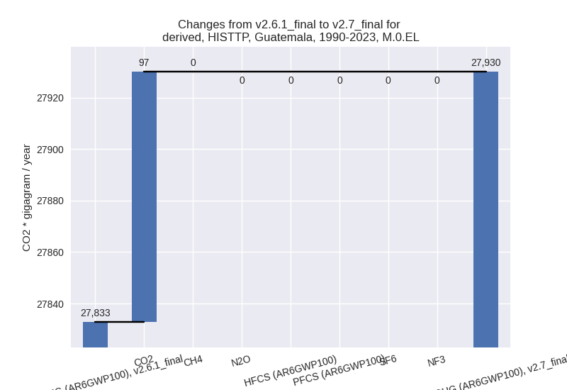
Detailed changes for the
scenarios:
country reported scenario
(HISTCR):
Most important changes
per time frame
For 2023 the following sector-gas combinations have
the highest absolute impact on national total KyotoGHG (AR6GWP100)
emissions in 2023 (top 5):
- 1: 1.A, CO2 with -1125.60 Gg CO2 / year (-5.5%)
- 2: M.AG.ELV, N2O with -1056.70 Gg CO2 / year (-48.6%)
- 3: 1.A, CH4 with 927.15 Gg CO2 / year (49.2%)
- 4: 2, CO2 with 882.23 Gg CO2 / year (66.4%)
- 5: 2, HFCS (AR6GWP100) with -480.97 Gg CO2 / year (-41.7%)
For 1990-2023 the following sector-gas combinations
have the highest absolute impact on national total KyotoGHG (AR6GWP100)
emissions in 1990-2023 (top 5):
- 1: M.AG.ELV, N2O with -1475.59 Gg CO2 / year (-53.4%)
- 2: 1.A, CH4 with 437.41 Gg CO2 / year (32.8%)
- 3: 3.A, N2O with -272.52 Gg CO2 / year (-67.7%)
- 4: M.AG.ELV, CH4 with 164.65 Gg CO2 / year (82.1%)
- 5: 2, HFCS (AR6GWP100) with -158.49 Gg CO2 / year (-58.8%)
Changes in the main sectors for aggregate KyotoGHG (AR6GWP100)
are
- 1: Total sectoral emissions in 2022 are 21579.09 Gg
CO2 / year which is 64.2% of M.0.EL emissions. 2023 Emissions have
changed by 0.6% (144.89 Gg CO2 /
year). 1990-2023 Emissions have changed by 4.0% (552.81 Gg CO2 / year). For 1990-2023
the changes per gas
are:
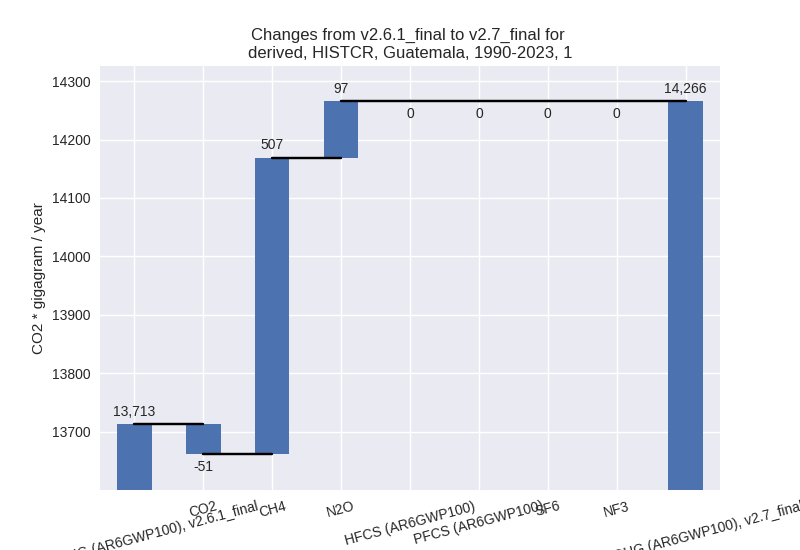
The changes come from the following subsectors:
- 1.A: Total sectoral emissions in 2022 are 21387.94
Gg CO2 / year which is 99.1% of category 1 emissions. 2023 Emissions
have changed by 0.1% (26.09 Gg CO2 /
year). 1990-2023 Emissions have changed by 3.5% (481.44 Gg CO2 / year). For 1990-2023
the changes per gas
are:
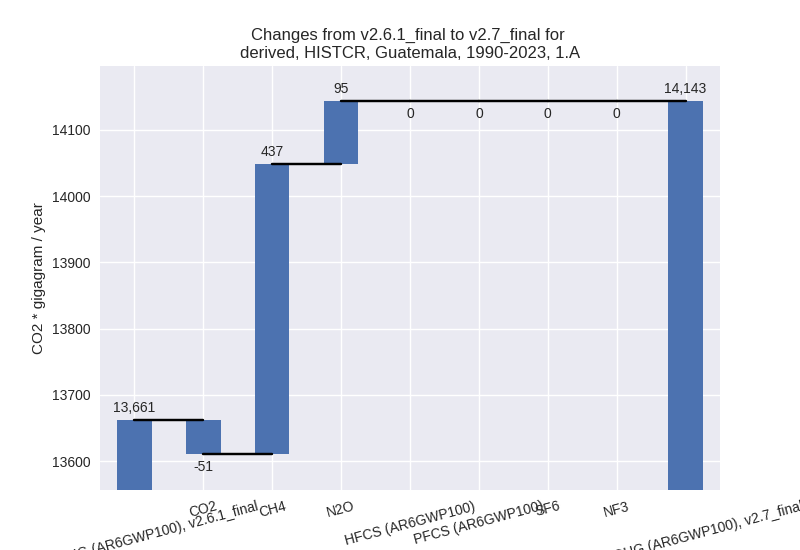
There is no subsector information available in PRIMAP-hist.
- 1.B.1: Total sectoral emissions in 2022 are 190.26
Gg CO2 / year which is 0.9% of category 1 emissions. 2023 Emissions have
changed by inf% (190.26 Gg CO2 /
year). 1990-2023 Emissions have changed by inf% (120.97 Gg CO2 / year). For 2023 the
changes per gas
are:
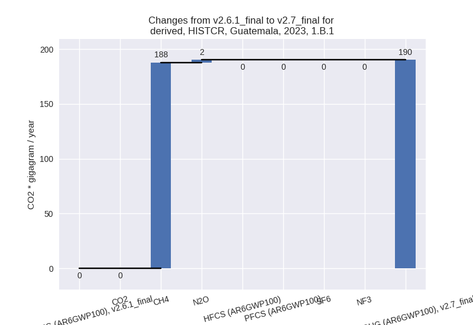
For 1990-2023 the changes per gas
are:
There is no subsector information available in PRIMAP-hist.
- 1.B.2: Total sectoral emissions in 2022 are 0.89 Gg
CO2 / year which is 0.0% of category 1 emissions. 2023 Emissions have
changed by -98.7% (-71.46 Gg CO2 /
year). 1990-2023 Emissions have changed by -96.8% (-49.60 Gg CO2 / year). For 2023
the changes per gas
are:
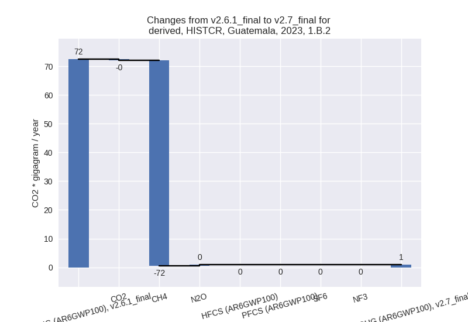
For 1990-2023 the changes per gas
are:
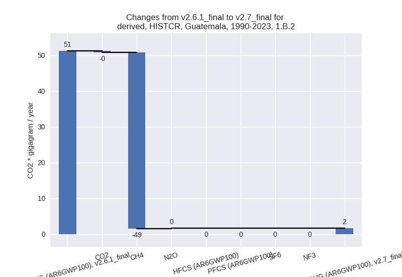
There is no subsector information available in PRIMAP-hist.
- 2: Total sectoral emissions in 2022 are 2837.85 Gg
CO2 / year which is 8.4% of M.0.EL emissions. 2023 Emissions have
changed by 16.2% (401.32 Gg CO2 /
year). 1990-2023 Emissions have changed by -9.8% (-138.67 Gg CO2 / year). For 2023
the changes per gas
are:
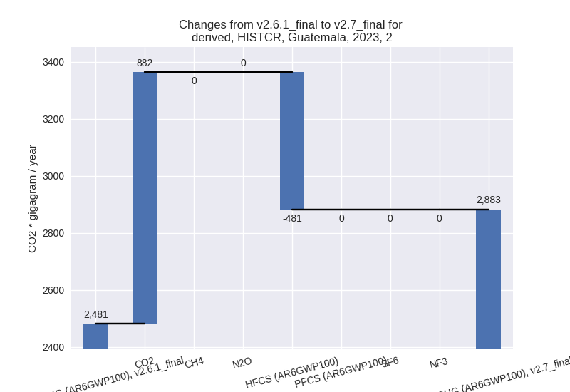
For 1990-2023 the changes per gas
are:
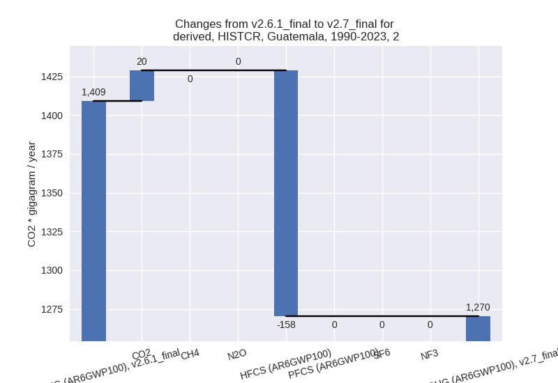
- M.AG: Total sectoral emissions in 2022 are 6596.66
Gg CO2 / year which is 19.6% of M.0.EL emissions. 2023 Emissions have
changed by -16.4% (-1293.58 Gg CO2 /
year). 1990-2023 Emissions have changed by -22.3% (-1665.04 Gg CO2 / year). For 2023
the changes per gas
are:
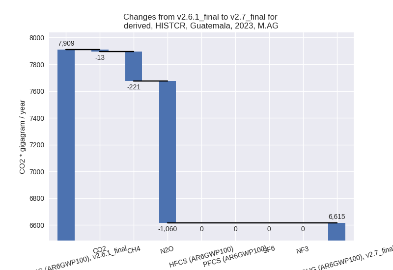
For 1990-2023 the changes per gas
are:
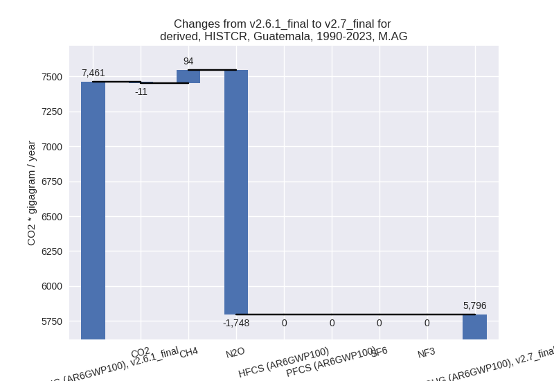
The changes come from the following subsectors:
- 3.A: Total sectoral emissions in 2022 are 5195.33
Gg CO2 / year which is 78.8% of category M.AG emissions. 2023 Emissions
have changed by -6.2% (-343.07 Gg
CO2 / year). 1990-2023 Emissions have changed by -7.7% (-343.37 Gg CO2 / year). For 2023
the changes per gas
are:
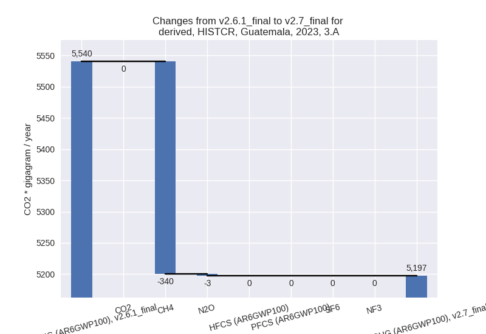
For 1990-2023 the changes per gas
are:
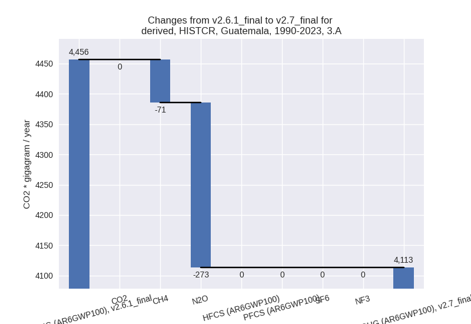
There is no subsector information available in PRIMAP-hist.
- M.AG.ELV: Total sectoral emissions in 2022 are
1401.33 Gg CO2 / year which is 21.2% of category M.AG emissions. 2023
Emissions have changed by -40.1%
(-950.51 Gg CO2 / year). 1990-2023 Emissions have changed by -44.0% (-1321.67 Gg CO2 / year). For 2023
the changes per gas
are:
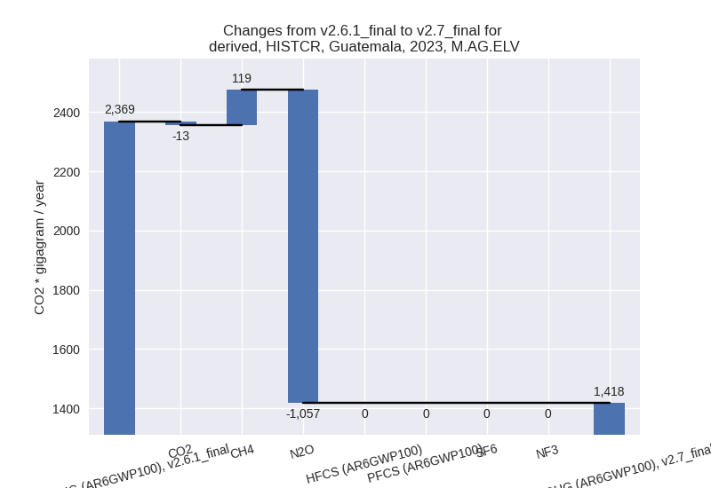
For 1990-2023 the changes per gas
are:
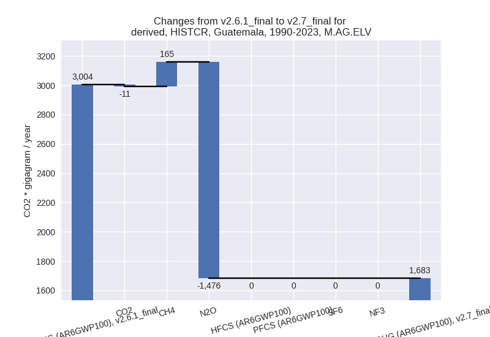
There is no subsector information available in PRIMAP-hist.
- 4: Total sectoral emissions in 2022 are 2270.39 Gg
CO2 / year which is 6.8% of M.0.EL emissions. 2023 Emissions have
changed by 28.4% (514.82 Gg CO2 /
year). 1990-2023 Emissions have changed by -2.0% (-27.25 Gg CO2 / year). For 2023 the
changes per gas
are:
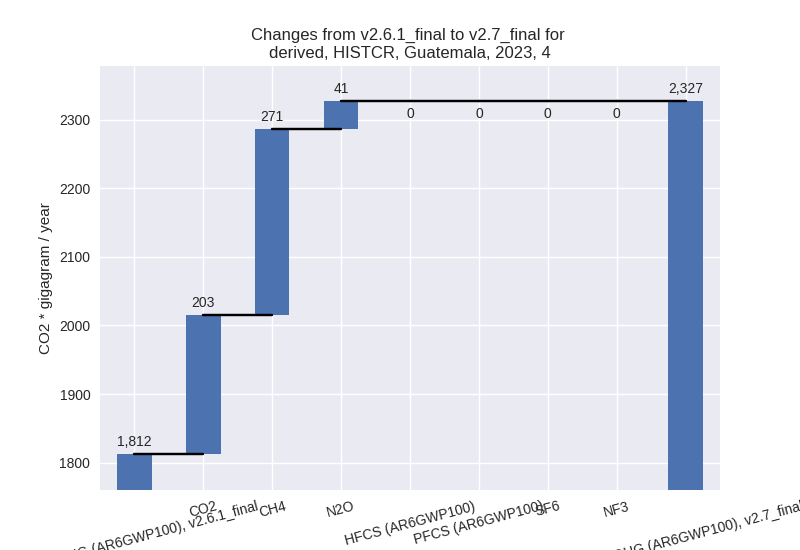
- 5: Total sectoral emissions in 2022 are 339.99 Gg
CO2 / year which is 1.0% of M.0.EL emissions. 2023 Emissions have
changed by 0.0% (0.00 Gg CO2 /
year). 1990-2023 Emissions have changed by 0.0% (0.00 Gg CO2 / year).
third party scenario (HISTTP):
Most important changes
per time frame
For 2023 the following sector-gas combinations have
the highest absolute impact on national total KyotoGHG (AR6GWP100)
emissions in 2023 (top 5):
- 1: 4, CO2 with 202.82 Gg CO2 / year (46446.3%)
- 2: 1.A, CO2 with -108.90 Gg CO2 / year (-0.6%)
- 3: M.AG.ELV, CO2 with 0.00 Gg CO2 / year (0.0%)
- 4: 5, N2O with 0.00 Gg CO2 / year (0.0%)
- 5: 4, N2O with 0.00 Gg CO2 / year (0.0%)
For 1990-2023 the following sector-gas combinations
have the highest absolute impact on national total KyotoGHG (AR6GWP100)
emissions in 1990-2023 (top 5):
- 1: 4, CO2 with 105.10 Gg CO2 / year (87154.5%)
- 2: 1.A, CO2 with -7.90 Gg CO2 / year (-0.1%)
- 3: 2, CH4 with 0.02 Gg CO2 / year (3.6%)
- 4: 2, HFCS (AR6GWP100) with 0.00 Gg CO2 / year (0.0%)
- 5: 5, N2O with 0.00 Gg CO2 / year (0.0%)
Changes in the main sectors for aggregate KyotoGHG (AR6GWP100)
are
- 1: Total sectoral emissions in 2022 are 20760.96 Gg
CO2 / year which is 49.9% of M.0.EL emissions. 2023 Emissions have
changed by -0.5% (-108.90 Gg CO2 /
year). 1990-2023 Emissions have changed by -0.1% (-7.90 Gg CO2 / year).
- 2: Total sectoral emissions in 2022 are 1722.66 Gg
CO2 / year which is 4.1% of M.0.EL emissions. 2023 Emissions have
changed by 0.0% (0.00 Gg CO2 /
year). 1990-2023 Emissions have changed by 0.0% (0.02 Gg CO2 / year).
- M.AG: Total sectoral emissions in 2022 are 11471.57
Gg CO2 / year which is 27.6% of M.0.EL emissions. 2023 Emissions have
changed by 0.0% (0.00 Gg CO2 /
year). 1990-2023 Emissions have changed by 0.0% (0.00 Gg CO2 / year).
- 4: Total sectoral emissions in 2022 are 7287.18 Gg
CO2 / year which is 17.5% of M.0.EL emissions. 2023 Emissions have
changed by 2.8% (202.82 Gg CO2 /
year). 1990-2023 Emissions have changed by 2.3% (105.10 Gg CO2 / year). For 2023 the
changes per gas
are:
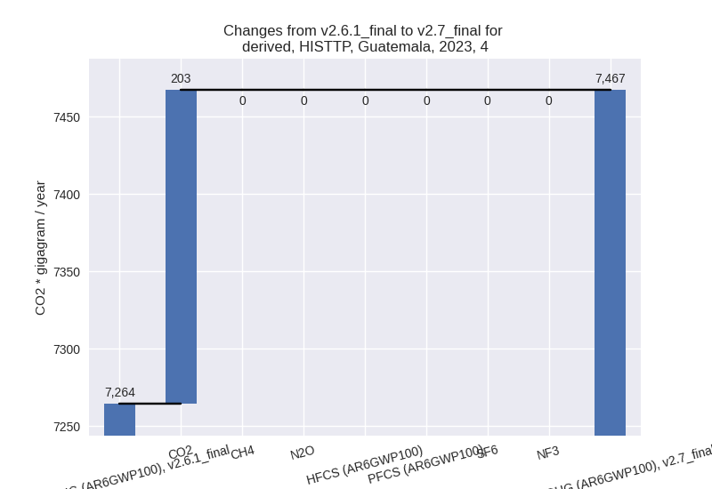
For 1990-2023 the changes per gas
are:
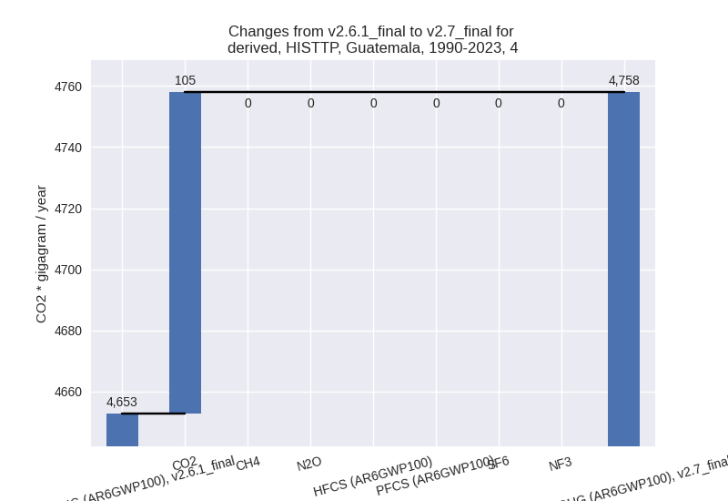
- 5: Total sectoral emissions in 2022 are 339.99 Gg
CO2 / year which is 0.8% of M.0.EL emissions. 2023 Emissions have
changed by 0.0% (0.00 Gg CO2 /
year). 1990-2023 Emissions have changed by 0.0% (0.00 Gg CO2 / year).